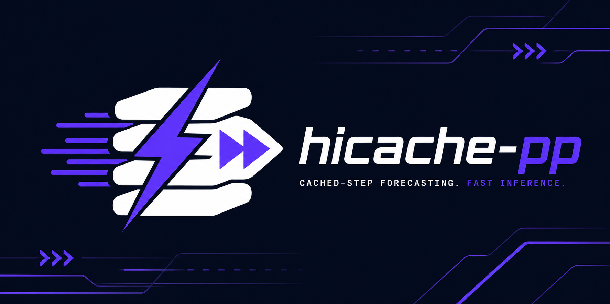
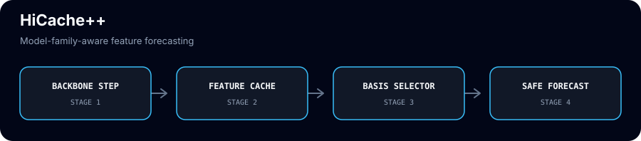
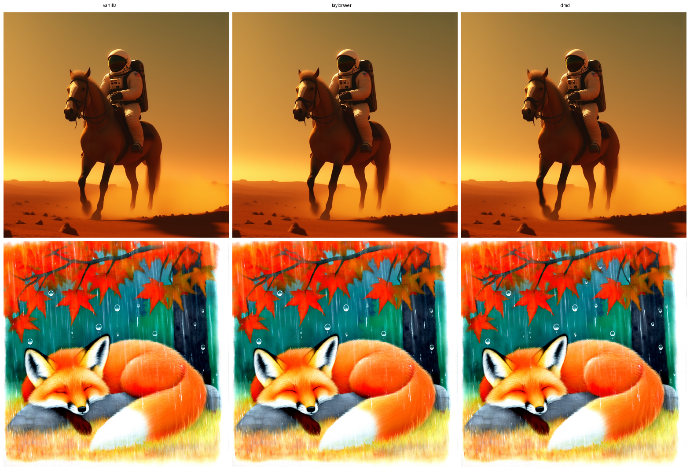

Exponential feature forecasting for training-free diffusion caching
Feature caches (TaylorSeer, HiCache) skip the network on most denoising steps and forecast the cached features from recent compute-step anchors. HiCache++ adds the exponential (DMD/Prony) basis and a training-free holdout selector, with the basis picked by model family.
pip install hicache-pp
01
Evidence
| Synthetic feature-ODE forecast, H=8 | 2.2e-7 rel. L2 error for the exponential basis vs 6.5e0 (monomial) and 1.2e0 (rational) |
|---|---|
| Regime-switch detection (auto holdout) | 120/120 windows detected; long-horizon error contained at 1.56 vs 9.40 forced-exponential |
| Hunyuan3D-2.1, interval 5 | 0.860 F-score@0.05 (DMD) vs 0.735 Hermite arm at 1.79x speedup; lead grows to +0.24 at i6 |
| Hunyuan3D-2-mini, interval 5 | 0.794 = baseline, exactly lossless F-score@0.05 |
| SAM3D, DMD interval 6 | F1 = 1.000 geometry-lossless vs baseline at 1.56x speedup (CD 0.013) |
| TRELLIS v1 sparse-structure stage | 0.829 F-score@0.05 at 2.76x, −0.010 vs vanilla (Hermite 0.825, −0.014) |
| DiT-XL/2 corrected polynomial ladder | 2.27 paired-noise FID drift (TaylorSeer, 3.81x); corrected Hermite 3.54 / 6.46 / 10.74 at i4 / i6 / i8 |
| Per-window eigendecomposition cache | 483 ms/img for dmd_i4 (was 566; 3.17x → 3.71x), 2.5–3.1x cheaper per forecast on CPU |
02
Media


03
Install & verify
python -m hicache_pp.hermite # Hermite basis + schedule + sign-convention regressions python -m hicache_pp.dmd # exponential basis + auto holdout modes + eigencache python -m hicache_pp.tree # tree-aware Hermite + exponential + Adaptive-CFG + eigencache python tests/run_tests.py # full CPU suite, passes 30 tests; also pytest-discoverable
04
Limits
What this release does not claim (from the release notes):
- GPU-gated benchmark cells (FLUX/DMD head-to-heads need CUDA).
05
Family
| Downstream adapters | TRELLIS v1: faster-trellis, faster-trellis-plus-plus · TRELLIS.2: fast-trellis2, hermit-trellis2, hermit-trellis2-plus-plus · Hunyuan3D-2: hunyuan2-plus, hunyuan2-plus-plus · Hunyuan3D-2.1: hunyuan2.1-plus, hunyuan2.1-plus-plus · SAM: sam3d-plus, sam3d-plus-plus, fastsam3d-plus, fastsam3d-plus-plus |
|---|---|
| ComfyUI nodes | ComfyUI-HiCache · ComfyUI-TRELLIS-HiCache · ComfyUI-TRELLIS2-HiCache |
| Builds on | TaylorSeer forecasting (cache-dit implementation) · HiCache Hermite basis |
| External | TaylorSeer arXiv:2503.06923 · HiCache arXiv:2508.16984 · reference impl |